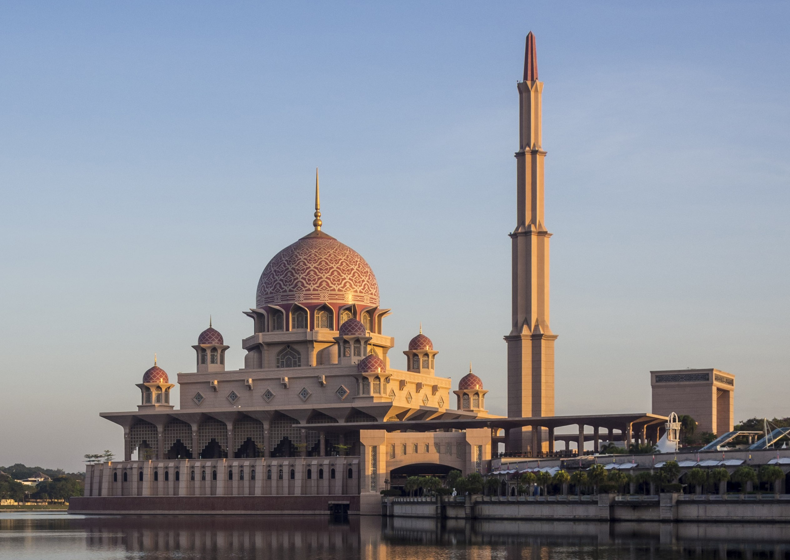
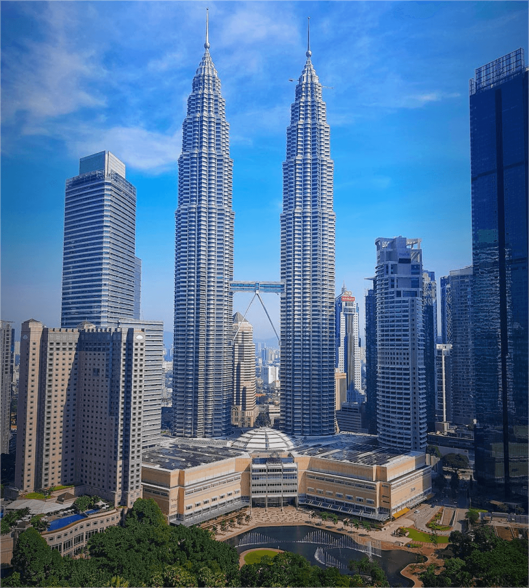
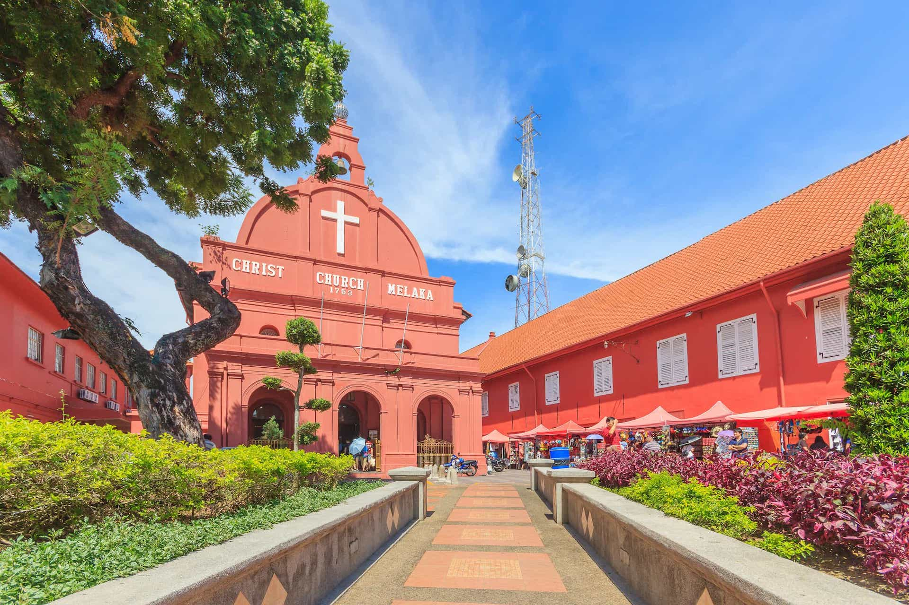
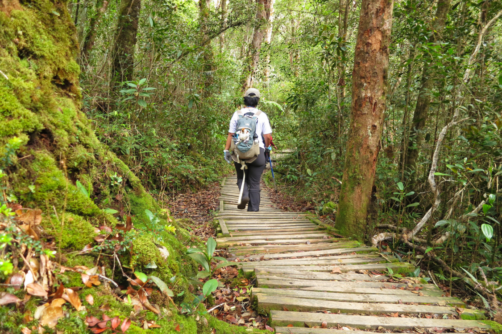

An elegant crossing of Malay, Chinese, Indian and Bornean civilizations.

Completed in 1999, the Putra Mosque blends traditional Islamic architecture with modern design and overlooks the serene Putrajaya Lake.
Named after Malaysia's first Prime Minister, it is one of the country's most recognisable modern landmarks.

Standing 452 metres tall, the Petronas Twin Towers were once the tallest buildings in the world and remain Kuala Lumpur's defining skyline.
Designed by César Pelli and inspired by Islamic geometry.

Built in 1753, Christ Church is one of Southeast Asia's oldest functioning Protestant churches.
Located within the UNESCO World Heritage Site of Melaka.

Malaysia's first UNESCO World Heritage Site, celebrated for its exceptional biodiversity.
Home to thousands of endemic plant and animal species.